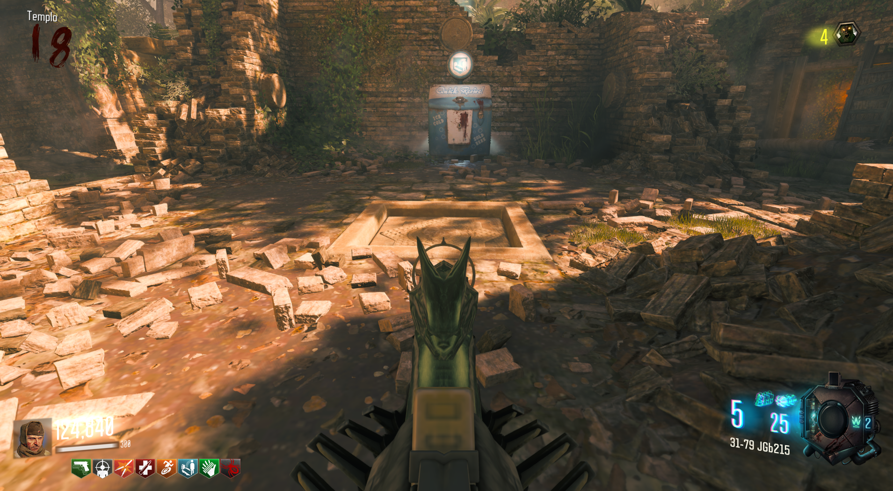
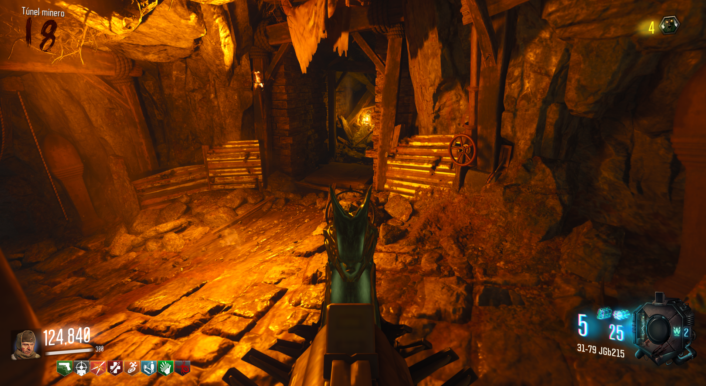
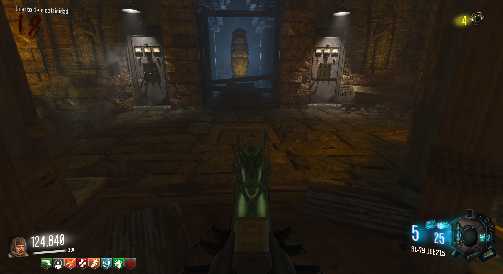
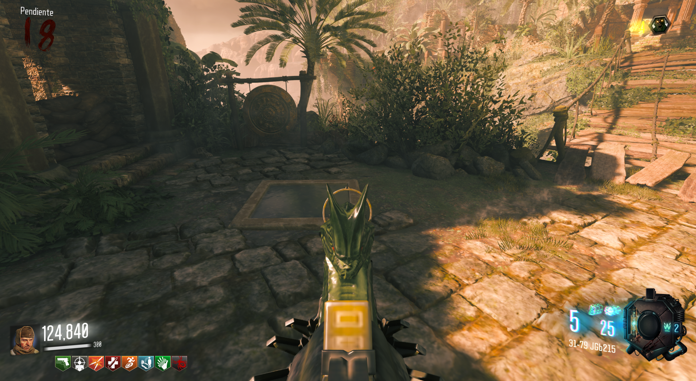

Tendremos que ir a cada una de las cuatro baldosas del mapa y presionar las que se encuentren hacia arriba.
Localizaciones:

Frente al Quick Revive en el Spawn.

Por el túnel de la zona de la vagoneta, a la izquierda de una válvula.

En el cuarto de electricidad.

Cruzando el puente de madera.
Al hacer que todas se encuentren presionadas, las escaleras bajarán y podremos llegar al Pack-A-Punch.